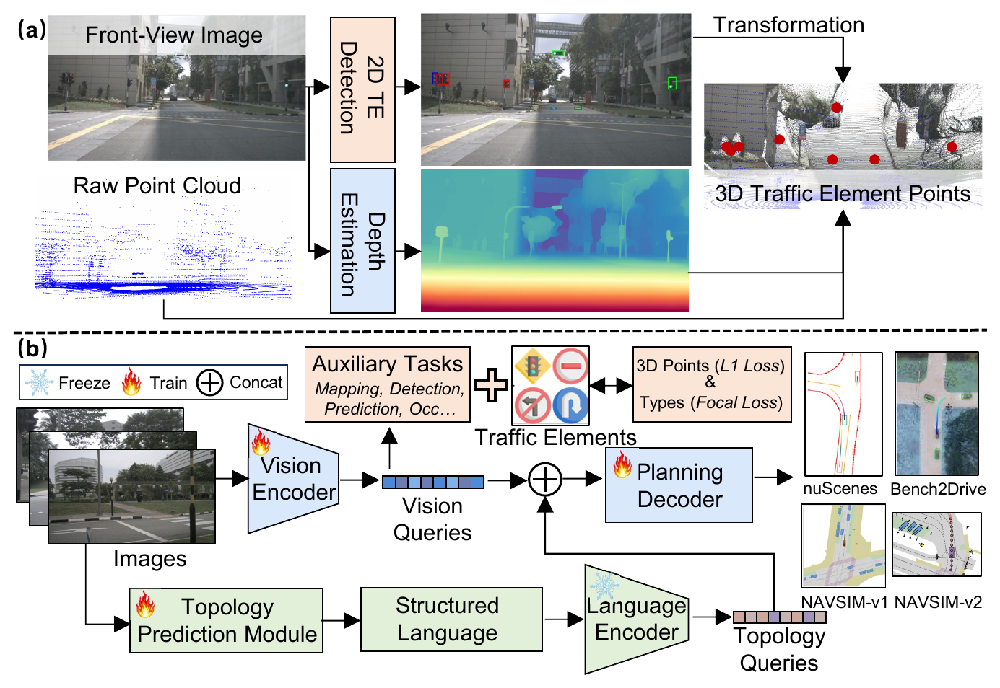
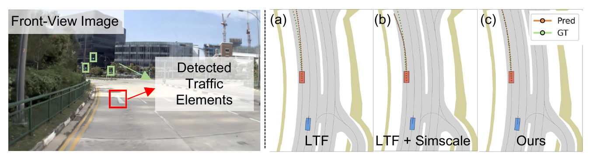
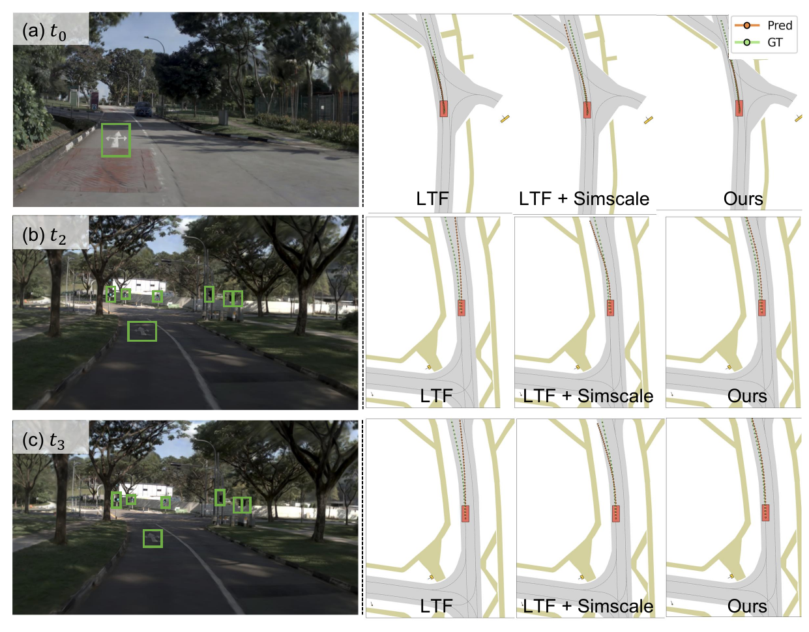
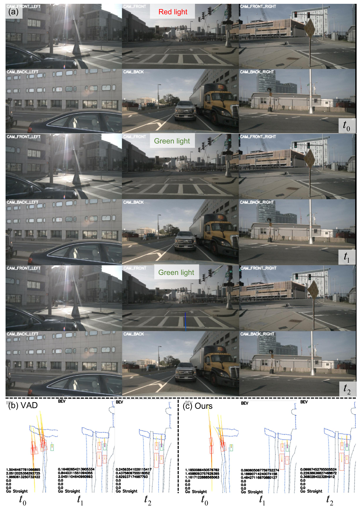
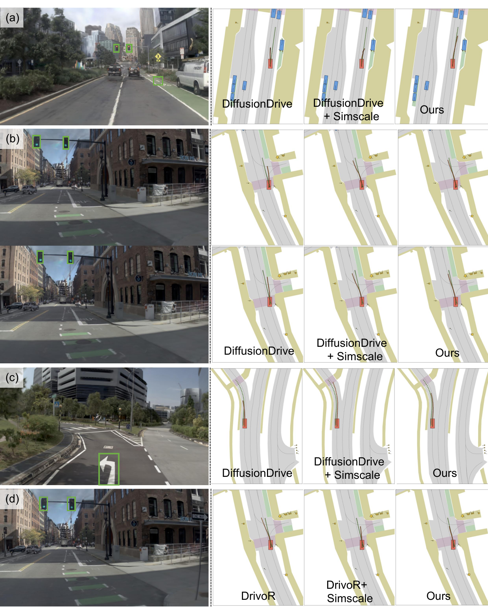
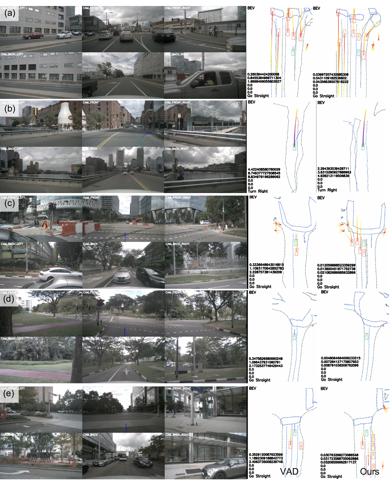

59.1% of nuScenes training scenes, 58.3% of nuScenes validation scenes, and 65.1% of NAVSIM-v1 scenes contain traffic elements.
Motivation
Traffic elements are rule-critical, common, and under-modeled.
End-to-end driving models often emphasize dynamic agents and dense geometry, while traffic lights and road signs directly constrain legal maneuvers. This work builds a unified 3D traffic-element infrastructure and studies whether TE awareness transfers across planners, datasets, and evaluation protocols.
A lightweight 3D TE auxiliary task and optional topology conditioning can be added to existing E2E planners with minimal architecture changes.
The method improves regression, diffusion, scoring, VLM/VLA-style, and perception-planning systems across open-loop and closed-loop benchmarks.
Perception-planningVAD and classical E2E systems on nuScenes / Bench2Drive.
VLM / VLAOrion-style vision-language-action planning.
RegressionLTF-style direct trajectory regression.
DiffusionDiffusionDrive-style generative planning.
ScoringDrivoR-style trajectory proposal and ranking.
Closed-loopCARLA Bench2Drive evaluation with real planner rollouts.
Method
Lift traffic elements into 3D, then route them into planning.
The pipeline first constructs 3D traffic-element pseudo-labels from 2D detection, monocular depth, and LiDAR geometry. During planner training, TE supervision encourages BEV or vision queries to encode sparse but decision-critical rule cues. When topology is available, ego-centric lane and TE relations are encoded as structured language and fused into the planning decoder.

1
Construct 3D traffic elements
Combine front-view TE detection, depth estimation, camera calibration, and LiDAR evidence to obtain 3D TE center points.
2
Add lightweight TE supervision
Supervise TE location with L1 loss and category with focal loss, alongside the planner's original auxiliary tasks.
3
Filter ego-relevant topology
Use LCLC and LCTE relations to keep the centerlines and traffic elements that actually govern the ego lane.
4
Condition the planning decoder
Encode topology as structured language and concatenate topology queries with TE-enhanced BEV or vision queries.
Main Experiments
Stable improvements across multiple end-to-end driving paradigms.
The main results show that traffic-element awareness improves trajectory accuracy, rule compliance, and closed-loop driving score across perception-planning, VLM/VLA, regression-based, diffusion-based, and scoring-based planners. The project page reports the primary experimental results only; ablation studies are intentionally omitted.
nuScenes Planning L2 and collision rate lower are better; FPS higher is better
Caption. nuScenes compares LiDAR-based methods, camera-based E2E planners, and VLM/VLA-style planners under the standard open-loop protocol. Highlighted rows isolate the plug-and-play traffic-element and topology signals, showing consistent gains for both VAD and Orion.
| Method | Auxiliary Task | L2 (m) ↓ | Collision Rate (%) ↓ | FPS ↑ | ||||||
|---|---|---|---|---|---|---|---|---|---|---|
| 1s | 2s | 3s | Avg. | 1s | 2s | 3s | Avg. | |||
| LiDAR-based Methods | ||||||||||
| NMP◇ | Det + Motion | 0.53 | 1.25 | 2.67 | 1.48 | 0.04 | 0.12 | 0.87 | 0.34 | — |
| FF◇ | FreeSpace | 0.55 | 1.20 | 2.54 | 1.43 | 0.06 | 0.17 | 1.07 | 0.43 | — |
| EO◇ | FreeSpace | 0.67 | 1.36 | 2.78 | 1.60 | 0.04 | 0.09 | 0.88 | 0.33 | — |
| Camera-based End-to-End Planning Methods | ||||||||||
| ST-P3 | Det + Map + Depth | 1.33 | 2.11 | 2.90 | 2.11 | 0.23 | 0.62 | 1.27 | 0.71 | 1.6 |
| UniAD | Det + Track + Map + Motion + Occ | 0.44 | 0.67 | 0.96 | 0.69 | 0.04 | 0.08 | 0.23 | 0.12 | 1.8 |
| VAD-Tiny | Det + Map + Motion | 0.46 | 0.76 | 1.12 | 0.78 | 0.21 | 0.35 | 0.58 | 0.38 | 16.8 |
| BEV-Planner | None | 0.28 | 0.42 | 0.68 | 0.46 | 0.04 | 0.37 | 1.07 | 0.49 | — |
| PARA-Drive | Det + Track + Map + Motion + Occ | 0.25 | 0.46 | 0.74 | 0.48 | 0.14 | 0.23 | 0.39 | 0.25 | 5.0 |
| LAW | None | 0.26 | 0.57 | 1.01 | 0.61 | 0.14 | 0.21 | 0.54 | 0.30 | 19.5 |
| GenAD | Det + Map + Motion | 0.28 | 0.49 | 0.78 | 0.52 | 0.08 | 0.14 | 0.34 | 0.19 | 6.7 |
| SparseDrive | Det + Track + Map + Motion | 0.29 | 0.58 | 0.96 | 0.61 | 0.01 | 0.05 | 0.18 | 0.08 | 9.0 |
| UAD | Det | 0.28 | 0.41 | 0.65 | 0.45 | 0.01 | 0.03 | 0.14 | 0.06 | 7.2 |
| MomAD | Det + Track + Map + Motion | 0.31 | 0.57 | 0.91 | 0.60 | 0.01 | 0.05 | 0.22 | 0.09 | 7.8 |
| Perception-planning Baseline with TE / Topology | ||||||||||
| VAD-Base | Det + Map + Motion | 0.41 | 0.70 | 1.05 | 0.72 | 0.07 | 0.17 | 0.41 | 0.22 | 5.7 |
| VAD + TE | Det + Map + Motion | 0.36 | 0.61 | 0.92 | 0.63 | 0.09 | 0.14 | 0.28 | 0.17 | 5.7 |
| VAD + Topo | Det + Map + Motion + Topo | 0.34 | 0.59 | 0.92 | 0.62 | 0.05 | 0.15 | 0.29 | 0.16 | 5.4 |
| VAD + Ours | Det + Map + Motion + Topo | 0.34 | 0.56 | 0.90 | 0.60 | 0.04 | 0.21 | 0.26 | 0.17 | 5.4 |
| VLM / VLA-based Methods | ||||||||||
| Qwen-2.5-VL | Scene Understanding | 0.46 | 1.33 | 2.55 | 1.45 | — | — | — | — | 0.8 |
| Senna | Det + Motion | 0.37 | 0.54 | 0.86 | 0.59 | 0.09 | 0.12 | 0.33 | 0.18 | 1.6 |
| DriveVLM | Scene Understanding | 0.18 | 0.34 | 0.68 | 0.40 | 0.10 | 0.22 | 0.45 | 0.27 | — |
| OmniDrive | Scene Understanding | 0.14 | 0.29 | 0.55 | 0.33 | 0.00 | 0.13 | 0.78 | 0.30 | 1.2 |
| EMMA | Scene Understanding | 0.14 | 0.29 | 0.54 | 0.32 | — | — | — | — | — |
| ImpromptuVLA | Scene Understanding | 0.13 | 0.27 | 0.53 | 0.30 | — | — | — | — | 0.9 |
| Orion† | Det + Motion | 0.17 | 0.31 | 0.55 | 0.34 | 0.05 | 0.25 | 0.80 | 0.37 | 0.9 |
| Orion† + TE | Det + Motion | 0.14 | 0.27 | 0.47 | 0.29 | 0.06 | 0.20 | 0.55 | 0.27 | 0.9 |
| Orion† + Topo | Det + Motion + Topo | 0.12 | 0.25 | 0.45 | 0.27 | 0.04 | 0.21 | 0.50 | 0.25 | 0.8 |
| Orion† + Ours | Det + Motion + Topo | 0.11 | 0.25 | 0.43 | 0.26 | 0.04 | 0.19 | 0.47 | 0.23 | 0.8 |
NAVSIM-v1 navtest Camera-only methods; all metrics higher are better
Caption. NAVSIM-v1 reports the official PDMS and its safety/compliance components. The table keeps the paper's method taxonomy and shows that TE supervision improves regression-based, diffusion-based, and scoring-based planners, with further gains when combined with SimScale data.
| Method | Backbone | Venue | NC ↑ | DAC ↑ | TTC ↑ | Comf. ↑ | EP ↑ | PDMS ↑ |
|---|---|---|---|---|---|---|---|---|
| Reference / Rule-based Upper Context | ||||||||
| PDM-Closed | — | PMLR'23 | 94.6 | 99.8 | 89.9 | 86.9 | 99.9 | 89.1 |
| Human driver | — | NeurIPS'24 | 100 | 100 | 100 | 99.9 | 87.5 | 94.8 |
| Published Camera-only E2E Methods | ||||||||
| Ego-stat. MLP | — | NeurIPS'24 | 93.0 | 77.3 | 83.6 | 100 | 62.8 | 65.6 |
| UniAD | ResNet34 | CVPR'23 | 97.8 | 91.9 | 92.9 | 100 | 78.8 | 83.4 |
| VAD-v2 | ResNet34 | ICLR'26 | 98.1 | 94.8 | 94.3 | 100 | 80.6 | 86.2 |
| ReCogDrive | InternViT | ICLR'26 | 97.9 | 97.3 | 94.9 | 100 | 87.3 | 90.8 |
| Hydra-MDP | ResNet34 | arXiv'24 | 98.3 | 96.0 | 94.6 | 100 | 78.7 | 86.5 |
| Centaur | ResNet34 | arXiv'25 | 99.5 | 98.9 | 98.0 | 100 | 85.9 | 92.6 |
| DriveSuprim | ResNet34 | AAAI'26 | 97.8 | 97.3 | 93.6 | 100 | 86.7 | 89.9 |
| Regression-based Planner | ||||||||
| LTF | ResNet34 | TPAMI'22 | 97.8 | 92.8 | 93.3 | 100 | 78.9 | 84.1 |
| LTF + Ours | ResNet34 | ECCV'26 | 97.8 | 93.9 | 93.8 | 100 | 79.8 | 85.2 +1.1 |
| LTF (+SimScale) | ResNet34 | ECCV'26 | 98.3 | 95.6 | 94.6 | 100 | 81.3 | 87.3 +3.2 |
| LTF (+SimScale) + Ours | ResNet34 | ECCV'26 | 98.2 | 95.9 | 94.5 | 100 | 82.0 | 87.6 +3.5 |
| Diffusion-based Planner | ||||||||
| DiffusionDrive | ResNet34 | CVPR'25 | 97.9 | 94.6 | 93.6 | 100 | 80.7 | 86.0 |
| DiffusionDrive + Ours | ResNet34 | ECCV'26 | 98.1 | 96.0 | 94.2 | 100 | 82.3 | 87.7 +1.7 |
| DiffusionDrive (+SimScale) | ResNet34 | ECCV'26 | 98.5 | 97.0 | 94.7 | 100 | 83.1 | 88.9 +2.9 |
| DiffusionDrive (+SimScale) + Ours | ResNet34 | ECCV'26 | 98.6 | 97.2 | 94.7 | 100 | 83.5 | 89.1 +3.1 |
| Scoring-based Planner | ||||||||
| DrivoR | ViT-S | CVPR'26 | 98.9 | 98.3 | 96.2 | 100 | 89.1 | 93.1 |
| DrivoR + Ours | ViT-S | ECCV'26 | 99.0 | 98.7 | 96.9 | 100 | 90.8 | 94.4 +1.3 |
| DrivoR (+SimScale) | ViT-S | ECCV'26 | 99.1 | 99.2 | 96.9 | 100 | 91.6 | 94.6 +1.5 |
| DrivoR (+SimScale) + Ours | ViT-S | ECCV'26 | 99.7 | 99.7 | 98.1 | 100 | 92.2 | 95.1 +2.0 |
NAVSIM-v2 navhard-two-stage All Stage 1/Stage 2 metrics and EPDMS higher are better
Caption. NAVSIM-v2 uses the harder two-stage EPDMS evaluation, exposing compounding-error effects. The grouped rows follow the paper and highlight that traffic-element awareness improves three different planning paradigms: regression (+47%), diffusion (+29%), and scoring (+20%) in the strongest data-scaled settings.
| Method | Stage 1 | Stage 2 | EPDMS ↑ | ||||||||||||||||
|---|---|---|---|---|---|---|---|---|---|---|---|---|---|---|---|---|---|---|---|
| NC | DAC | DDC | TLC | EP | TTC | LK | HC | EC | NC | DAC | DDC | TLC | EP | TTC | LK | HC | EC | ||
| Existing Methods | |||||||||||||||||||
| ZTRS† | 98.9 | 97.6 | 100 | 100 | 66.7 | 98.9 | 96.2 | 96.7 | 44.0 | 91.1 | 90.4 | 95.8 | 99.0 | 63.6 | 89.8 | 60.4 | 97.6 | 66.1 | 45.5 |
| DiffVLA† | 95.7 | 99.2 | 100 | 100 | 85.9 | 96.4 | 97.1 | 95.0 | 84.2 | 81.2 | 88.8 | 94.6 | 99.0 | 86.0 | 76.4 | 59.8 | 98.6 | 80.4 | 45.0 |
| GTRS-Dense† | 98.9 | 94.9 | 99.1 | 100 | 76.1 | 98.4 | 93.8 | 94.9 | 37.8 | 89.9 | 90.5 | 94.1 | 99.3 | 77.6 | 88.5 | 56.0 | 92.0 | 30.2 | 41.9 |
| GuideFlow† | 97.8 | 97.1 | 100 | 100 | 81.4 | 98.5 | 91.4 | 92.8 | 34.2 | 87.3 | 92.3 | 98.0 | 96.9 | 75.8 | 85.5 | 59.3 | 95.4 | 53.5 | 46.7 |
| Regression-based Planner | |||||||||||||||||||
| LTF | 96.2 | 79.5 | 99.1 | 99.5 | 84.1 | 95.1 | 94.2 | 97.5 | 79.1 | 77.7 | 70.2 | 84.2 | 98.0 | 85.1 | 75.6 | 45.4 | 95.7 | 75.9 | 25.1 |
| LTF + Ours | 96.4 | 79.8 | 98.9 | 99.6 | 84.2 | 95.8 | 93.8 | 97.5 | 78.2 | 80.9 | 71.6 | 84.8 | 98.9 | 85.2 | 77.7 | 47.0 | 96.1 | 76.3 | 28.9 ↑15% |
| LTF (+SimScale) | 96.1 | 85.3 | 99.4 | 99.3 | 84.7 | 94.7 | 93.5 | 97.5 | 77.3 | 85.5 | 66.9 | 91.5 | 99.1 | 93.0 | 81.1 | 58.2 | 95.1 | 42.9 | 33.6 ↑33% |
| LTF (+SimScale) + Ours | 97.0 | 85.3 | 99.7 | 99.6 | 84.2 | 96.2 | 96.0 | 97.6 | 77.3 | 88.1 | 71.8 | 93.1 | 99.0 | 86.7 | 83.0 | 54.0 | 95.2 | 55.4 | 36.9 ↑47% |
| Diffusion-based Planner | |||||||||||||||||||
| DiffusionDrive | 96.7 | 86.7 | 98.7 | 99.3 | 84.3 | 94.9 | 95.3 | 97.6 | 77.8 | 78.9 | 72.4 | 84.2 | 98.2 | 87.1 | 74.9 | 47.3 | 96.2 | 71.0 | 29.4 |
| DiffusionDrive + Ours | 97.1 | 86.9 | 98.8 | 99.6 | 84.2 | 95.1 | 95.6 | 97.6 | 79.5 | 80.2 | 74.0 | 85.0 | 98.1 | 86.3 | 77.2 | 48.4 | 96.6 | 74.4 | 32.7 ↑11% |
| DiffusionDrive (+SimScale) | 97.2 | 88.0 | 99.2 | 99.3 | 82.8 | 96.7 | 98.0 | 97.5 | 58.2 | 86.7 | 72.1 | 93.0 | 98.8 | 92.1 | 80.6 | 61.1 | 95.3 | 33.1 | 35.8 ↑12% |
| DiffusionDrive (+SimScale) + Ours | 97.1 | 88.4 | 99.3 | 99.3 | 84.1 | 95.6 | 98.2 | 97.6 | 72.9 | 83.7 | 76.3 | 92.5 | 98.9 | 90.3 | 78.9 | 57.7 | 94.4 | 56.1 | 37.9 ↑29% |
| Scoring-based Planner | |||||||||||||||||||
| DrivoR | 98.8 | 95.1 | 98.9 | 100 | 72.6 | 98.7 | 94.0 | 97.6 | 73.3 | 90.2 | 88.4 | 91.9 | 98.6 | 70.0 | 88.0 | 50.1 | 98.5 | 76.2 | 48.3 |
| DrivoR + Ours | 98.9 | 94.9 | 99.1 | 100 | 75.1 | 98.9 | 93.9 | 97.5 | 74.4 | 91.9 | 91.4 | 96.1 | 99.3 | 74.6 | 87.5 | 56.0 | 97.0 | 78.5 | 51.8 ↑7.2% |
| DrivoR (+SimScale) | 99.1 | 98.2 | 99.3 | 99.8 | 75.4 | 98.7 | 94.9 | 97.6 | 70.2 | 92.3 | 91.6 | 97.3 | 99.1 | 75.7 | 90.6 | 56.1 | 98.4 | 44.7 | 54.6 ↑13% |
| DrivoR (+SimScale) + Ours | 99.5 | 98.2 | 99.3 | 100 | 76.1 | 99.0 | 94.1 | 97.9 | 72.6 | 93.5 | 91.8 | 97.0 | 99.3 | 76.6 | 90.9 | 56.0 | 98.0 | 55.6 | 57.9 ↑20% |
Bench2Drive Closed-Loop Planning Driving score higher is better, Avg. L2 lower is better
Caption. Bench2Drive evaluates planners in CARLA closed loop. Adding TE awareness and topology improves both VAD and DriveTransformer-Large on Driving Score and Success Rate with only small latency changes, demonstrating that the signal transfers beyond open-loop prediction.
| Method | Avg. L2 ↓ | Driving Score ↑ | Success Rate (%) ↑ | Efficiency ↑ | Comfortness ↑ | Latency |
|---|---|---|---|---|---|---|
| Expert-feature Distillation Baselines | ||||||
| TCP* | 1.70 | 40.70 | 15.00 | 54.26 | 47.80 | 86 ms |
| TCP-ctrl* | — | 30.47 | 7.27 | 55.97 | 51.51 | 86 ms |
| TCP-traj* | 1.70 | 59.90 | 30.00 | 76.54 | 18.08 | 86 ms |
| TCP-traj w/o distillation | 1.96 | 49.30 | 20.45 | 78.78 | 22.96 | 86 ms |
| ThinkTwice* | 0.95 | 62.44 | 31.23 | 69.33 | 16.22 | 698 ms |
| DriveAdapter* | 1.01 | 64.22 | 33.08 | 70.22 | 16.01 | 958 ms |
| General E2E Baselines | ||||||
| AD-MLP | 3.64 | 18.05 | 0.00 | 48.45 | 22.63 | 4.7 ms |
| UniAD-Tiny | 0.80 | 40.73 | 13.18 | 123.92 | 47.04 | 400.3 ms |
| UniAD-Base | 0.73 | 45.81 | 16.36 | 129.21 | 43.58 | 692.6 ms |
| Closed-loop TE / Topology Integrations | ||||||
| VAD | 0.91 | 42.30 | 15.00 | 157.94 | 46.01 | 278.3 ms |
| VAD + Ours | 0.75 -0.16 | 56.40 +14.1 | 21.30 | 125.64 | 48.02 | 282.5 ms |
| DriveTransformer-Large | 0.62 | 63.46 | 35.01 | 100.64 | 20.78 | 211.7 ms |
| DriveTransformer-Large + Ours | 0.57 -0.05 | 68.29 +4.83 | 39.61 | 82.45 | 23.58 | 216.5 ms |
Qualitative Visualizations
Traffic elements change the planned behavior, not just the score.
We show how TE-aware planners behave in traffic-element-rich intersections, time-varying light states, and synthetic NAVSIM-v2 scenes across different planning paradigms.





Citation
BibTeX
Please cite this work if the traffic-element annotations, plug-and-play TE supervision, or topology-conditioning design are useful for your research.
@inproceedings{zhang2026plugin,
title = {Plug-and-Play Traffic Element Awareness for End-to-End Autonomous Driving},
author = {Zhang, Zongzheng and Wang, Jijun and Zhang, Saining and Wang, Shuo and Wang, Yiru and Yang, Hai and Chen, Yang and Heng, Yuwen and Sun, Hao and Jiang, Anqing and Zhao, Hao},
booktitle = {European Conference on Computer Vision (ECCV)},
year = {2026}
}